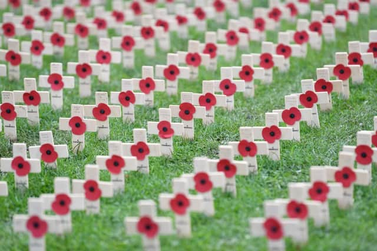
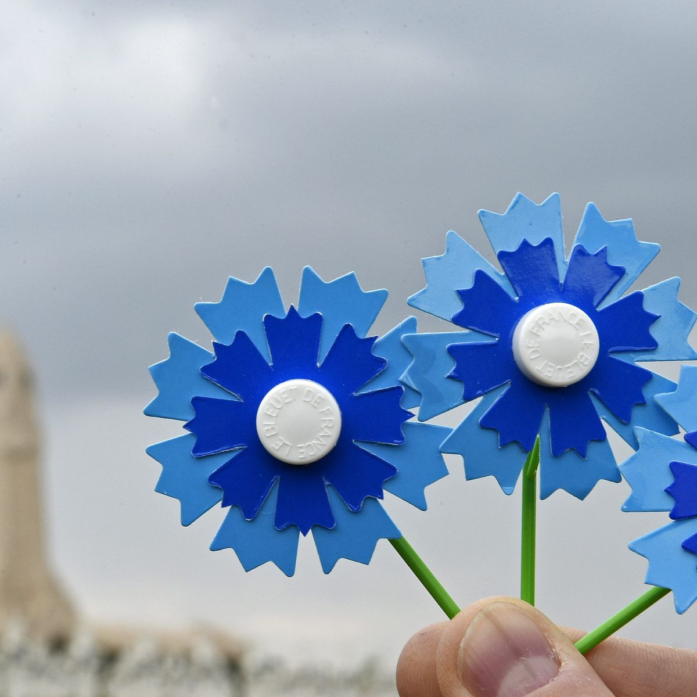
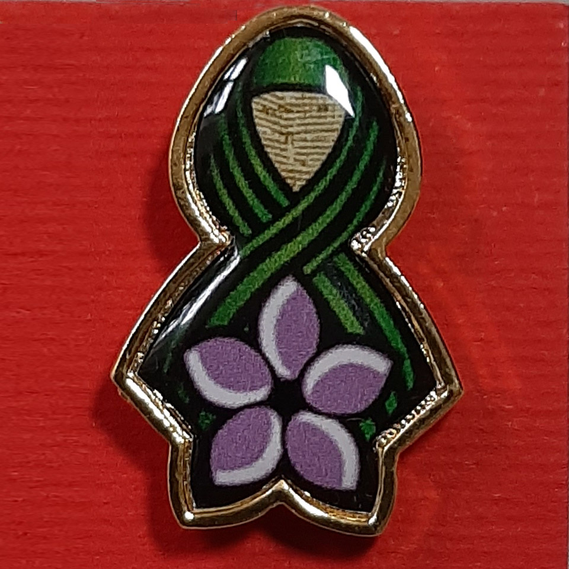

Armistice Day
The Armistice day marks the beginning of the end of The First World War. In 11 of November 1918 an armistice agreement between Germany and the Allies took place in a railroad car outside Compiégne, France.

History in Allied countries vs Central Powers
Today the Armistice day is seen in most countries as a day of remembrance and honor to those who sacrificed their lives to fight for their country but it has not always been viewed as such. Whilist the first Armistice day was celebrated in Buckinham palace in 1919 and continued being honored for decades and decades to come, the loosing side of the war experienced that day as a momment of defeat and further humiliation imposed due to the Treaty of Versailles. Fortunately today the nations from both sides come together many years later to reflect upon history and help others in need.
Remembrance Day
Not to be confused with Remembrance Sunday or Armistice Day, the Remembrance Day is a memmorial observed in commonwealth states to honour those who lost their lives during war. There are many other countries outside the Commonwealth with festivities and traditions taking place on November 11th to commemorate the armistice signed. Countries such as:
- France
- Belgium
- Serbia
- Bermuda
- Germany
- Poland
- Russia
- Denmark
- Norway
- Ireland
- India
- South Africa
- Honk Kong
- Israel
- Italy
- Netherlands
- Kenya
- Saint Lucia
Common Symbols Associated
Poppies
The red poppy is a symbol of both Remembrance and hope for a peaceful future.
Bleuet de France
The bleuet de France is a symbol of memory and solidarity with soldiers, veterans and others affected by war.
Natalie's Ramonda
Ramonda nathaliae is a species of flowers that grows in Serbia. The Flower is a symbol of the hardships faced by the Serbian army during WW1. Serbia was the Allied country with the biggest casualty rate during the war